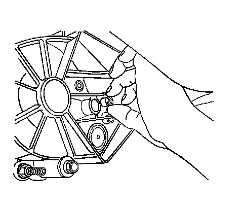
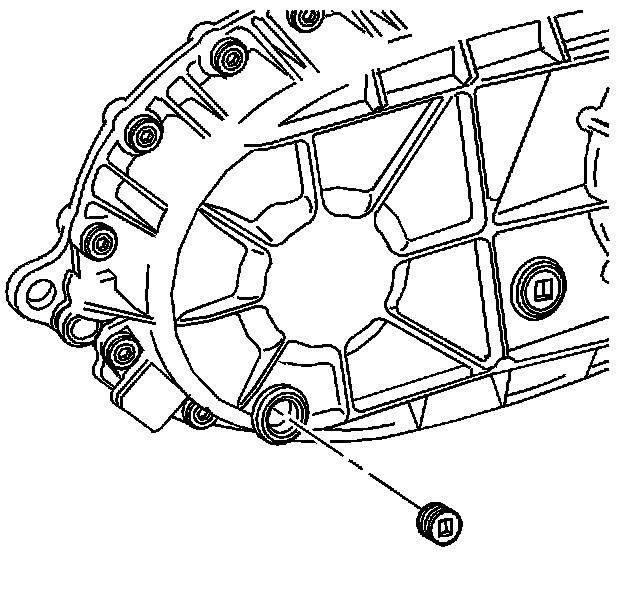

Fluid - Transfer Case: Service and Repair
Transfer Case Fluid Replacement
Removal Procedure
Important: When performing the following procedure, use only hand tools to remove and install the drain and fill plugs.

1. Raise and suitably support the vehicle. Refer to Lifting and Jacking the Vehicle.
2. Remove the transfer case shield, if equipped.
3. Remove the fill plug.

4. Remove the drain plug.
Important: Ensure that an approved drain pan is used when draining the transfer case.
5. Allow the transfer case to drain completely.
Installation Procedure
Important: Use only drain and fill plugs that are made from aluminum. Steel or brass plugs are not compatible with the magnesium case.
1. Apply sealant GM P/N 12346004, (Canadian P/N 10953480), or equivalent, to the threads of the drain and fill plugs.
Notice: Refer to Fastener Notice.
2. Install the drain plug.
Tighten the plug to 25 N.m (18 lb ft).
3. Fill the transfer case to the bottom of the fill plug hole with DEXRON(R)-III, GM P/N 12346143, (Canadian P/N 10952622).
4. Install the fill plug.
Tighten the plug to 25 N.m (18 lb ft).
5. Install the transfer case shield, if equipped.
6. Lower the vehicle.